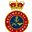

Conversation 27
Cloak and Dagger Clandestine Activities
Prompt 1 · You
cloak and dagger clandestine
Response 1 · Google AI Mode
10 sites
Here are top web results for exploring this topic:
X-Men Wiki | Fandom·https://x-men.fandom.com
Cloak and Dagger - X-Men Wiki | Fandom
Secret Invasion. Luke Cage calls Cloak, who drops off the New Avengers at the top of Stark Tower to steal one of Tony Stark's quinjets. When Cage offers to take him with them to find the downed Skrull
Facebook·https://www.facebook.com
What Does It Mean to Be Cloak and Dagger - Facebook
Being "cloak and dagger" means acting in a secretive, covert way, often tied to espionage and deception. The phrase comes from spies using cloaks to hide...
CIA (.gov)·https://www.cia.gov
Cloak and Dagger: The Unexpected Beginnings of CIA
Almost 70 years ago, in the blistering cold of a January winter, President Truman hosted a small, secret ceremony at the White House to establish the new Central Intelligence Group (CIG)—the CIA's ins
TV Tropes·https://tvtropes.org
Cloak and Dagger - TV Tropes
Cloak-and-dagger groups are those that have no real relationship to existing organizations but exist to conduct this kind of clandestine fun. When portrayed in a negative light, they are often filled

Wikipedia·https://en.wikipedia.org
Cloak and dagger - Wikipedia
"Cloak and dagger" was a fighting style common by the time of the Renaissance involving a knife hidden beneath a cloak. The term later came into use as a metaphor, referring to situations involving in
Reddit·https://www.reddit.com
Cloak and Dagger explained? : r/marvelstudios - Reddit
The two became fast friends until they were abducted by Doctor Simon Marshall , who used them as Guinea Pigs for a Synthetic Heroin . However, the drug killed ninety percent of the "volunteers" but im
YourDictionary·https://www.yourdictionary.com
Cloak-and-dagger Definition & Meaning - YourDictionary
Cloak-and-dagger Definition. klōkən-dăgər. Meanings · Synonyms. Source. All sources. Webster's New World. American Heritage. Wiktionary. Origin Adjective. Filter (0). adjective. Of or characteristic o

YouTube·https://www.youtube.com
From Runaways to Vigilantes: The Origin of Cloak and Dagger!
Join us in this intriguing exploration of the origins of Cloak and Dagger, two teenagers whose paths converged at a bus station in New York after running away from home. Their adventure quickly turned
Source links preserved from this response
- x-men.fandom.com
https://x-men.fandom.com/wiki/Cloak_and_Dagger - www.facebook.com
https://www.facebook.com/fb-answers/what-does-it-mean-to-be-cloak-and-dagger/ - www.cia.gov
https://www.cia.gov/stories/story/cloak-and-dagger-the-unexpected-beginnings-of-cia/ - tvtropes.org
https://tvtropes.org/pmwiki/pmwiki.php/Main/CloakAndDagger - en.wikipedia.org
https://en.wikipedia.org/wiki/Cloak_and_dagger - www.reddit.com
https://www.reddit.com/r/marvelstudios/comments/4quyu1/cloak_and_dagger_explained/ - www.yourdictionary.com
https://www.yourdictionary.com/cloak-and-dagger - www.youtube.com
https://www.youtube.com/watch?v=GAHsgC-NUIg - www.thefreedictionary.com
https://www.thefreedictionary.com/cloak-and-dagger - www.amazon.com.au
https://www.amazon.com.au/No-Cloak-Dagger-Professors-Secret-ebook/dp/B0CFZCZ2F6
Prompt 2 · You
Sas
Response 2 · Google AI Mode
Quick results from the web:
Following your previous mention of "cloak and dagger clandestine" operations, SAS most likely refers to the Special Air Service, the elite special forces unit of the British Army.  Wikipedia
Wikipedia
WikipediaHowever, depending on the context, the acronym can mean several completely different things:
1. Military & Covert Operations
- Special Air Service (SAS): Founded in 1941 during World War II, this highly secretive regiment specializes in counter-terrorism, hostage rescue, direct action, and covert strategic reconnaissance. Operating under the famous motto "Who Dares Wins," it serves as the blueprint for many of the world's premier special forces units. Wikipedia +1
2. Tech & Data Science
- SAS (Software): A powerful, widely used statistical software suite developed by the SAS Institute. It is a foundational tool in advanced business intelligence, data analytics, predictive modeling, and AI engineering. SAS: Data and AI Solutions +1
3. Commercial Aviation
- Scandinavian Airlines: The multi-national flag carrier airline for Denmark, Norway, and Sweden. Commonly known simply as SAS, it operates a massive network across Europe and global destinations. Wikipedia
Which of these versions of SAS were you looking to explore? If it's the military unit, I can give you details on their brutal selection process, historic operations (like the 1980 Iranian Embassy siege), or their specialized squadron branches.
Source links preserved from this response
- www.flysas.com
https://www.flysas.com/ - www.sas.com
https://www.sas.com/nl_nl/home.html - en.wikipedia.org
https://en.wikipedia.org/wiki/Special_Air_Service - en.wikipedia.org
https://en.wikipedia.org/wiki/Scandinavian_Airlines
Prompt 3 · You
In the context of the first prompt
Response 3 · Google AI Mode
In the true spirit of cloak and dagger clandestine operations, the Special Air Service (SAS) is built entirely around making the impossible look invisible.

The Regimental Store Ltd +1When executing deniable, high-risk missions behind enemy lines, the regular 22 SAS Regiment relies on a highly structured, hyper-specialized anatomy. They do not operate as a massive army, but rather break down into tiny, surgical cells.  Britannica +2
Britannica +2
Britannica +2The Anatomy of the Sabre Squadrons
The backbone of the SAS consists of four operational "Sabre" Squadrons: A, B, D, and G. Each squadron is composed of roughly 60 operators and is divided into four highly specialized Troops (approx. 16 men each), defined by how they infiltrate a target:
Grey Dynamics +2
- Air Troop: Experts in free-fall parachuting, utilizing HALO (High Altitude Low Opening) and HAHO (High Altitude High Opening) techniques to slip across borders undetected at night.
 Quora +1
Quora +1 - Boat Troop: Amphibious specialists trained in diving, Klepper canoeing, kayak insertion, and underwater demolitions to infiltrate from the sea or river networks. Quora
- Mountain Troop: Elite alpine and arctic combatants trained to survive and fight in brutal, high-altitude environments, utilizing terrain that conventional forces deem impassable. Quora +1
- Mobility Troop: Master navigators and mechanics who weaponize heavily armed, lightweight vehicles to wage deep-penetration desert or long-range reconnaissance operations. Elite UK Forces +1
At the absolute granular level of a clandestine operation is the four-man patrol. Every trooper in that patrol brings a vital, distinct skill: a linguist/intelligence expert, a combat medic, a demolitions specialist, and a signals/communications expert.
Grey Dynamics +1
The Clandestine Partners: UKSF & E Squadron
The SAS rarely acts completely alone in the shadows. They are part of the United Kingdom Special Forces (UKSF), which functions alongside other deeply secretive units: Britannica
Britannica- The Special Reconnaissance Regiment (SRR): While the SAS handles direct action and counter-terrorism, the SRR consists of the absolute masters of tradecraft. Operating primarily in plain clothes and unarmed, they specialize in deep undercover tracking, close-quarters surveillance, and architectural penetration.
 YouTube·Grid 88 +2
YouTube·Grid 88 +2 - E Squadron: Arguably the most "cloak and dagger" unit in the entire British establishment. It is a hyper-classified joint cell where tier-one operators (from the SAS and SBS) are directly seconded to MI6 (the Secret Intelligence Service). They operate in civilian clothing with fake identities, carrying out deniable, black-budget operations globally where British military presence can never be officially acknowledged. YouTube·Grid 88 +1
If you want to look deeper into their dark history, would you like to explore how they operated as "Stay-Behind" sleeper cells during the Cold War, or how they collaborated in Iraq and Syria under the joint US/UK counter-terror unit known as Task Force Black?
Source links preserved from this response
- www.regimentalstore.co.uk
https://www.regimentalstore.co.uk/blogs/news/history-of-the-sas-british-forces - www.britannica.com
https://www.britannica.com/topic/Special-Air-Service - greydynamics.com
https://greydynamics.com/sas-the-uk-army-special-air-service-2/ - www.quora.com
https://www.quora.com/Can-you-explain-the-hierarchy-within-the-British-SAS-Special-Air-Service - www.eliteukforces.info
https://www.eliteukforces.info/special-air-service/ - www.youtube.com
https://www.youtube.com/watch?v=JFDZH-L1RfU&t=43